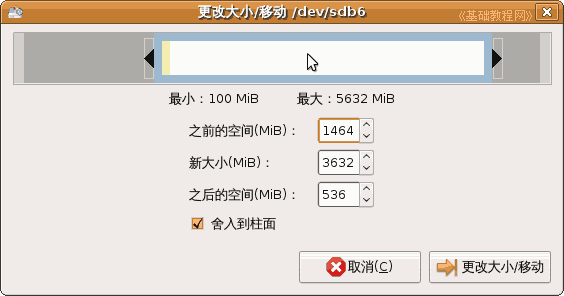

Gparted 分区编辑器基础
作者：TeliuTe 来源：基础教程网
四、改变分区大小和移动 返回目录 下一课使用分区编辑器可以调整分区的大小，操作前应备份重要数据，操作过程不会丢失分区里的数据，下面我们来看一个练习；
1、改变分区大小
1）点菜单“系统－系统管理－分区编辑器”打开 Gparted 窗口；
2）找到要改变大小的分区，如果显示有钥匙，则点右键先卸载该分区；
3）选中这个分区，点工具栏上的“改变分区大小/移动”按钮；
4）出来一个面板，上面彩色框显示了使用情况和空白情况，
可以在下面的“之后”框里直接输入新分区大小，也可以拖动上边彩色框右边的黑三角按钮来改变分区大小；
5）拖动上边的按钮，或直接输入新分区的大小，然后点右下角的“更改大小/移动”按钮；
6）返回到窗口中，点菜单“编辑－应用所有操作”命令，出来一个提示，
这儿是练习，点“取消”返回窗口，然后点“编辑－清除所有的操作”，
如果点“应用”即可开始执行更改，这儿可能需要较长的时间；
7）操作过程中耐心等待，不要干扰或出现停电等意外情况，最后出来提示完成操作，点“关闭”返回；
然后在列表中显示一个未分配的新分区，大小是刚才划分的，位置在后面；
2、移动分区
1）要移动分区的前面或后面有未分配的空间，就可以移动这个分区；
2）选中要移动的分区，例如上面的 ext2分区 sdb6，然后点工具栏上的“更改大小/移动”按钮；
3）在出来的面板中，拖动上面彩色分区，向后面灰色未分配空间拖动，一直拖动到最右边；

4）然后点右下角“更改大小/移动”按钮，回到窗口点菜单“编辑－应用所有操作”，这儿是练习点“取消”按钮，
如果点“应用”就可以移动了，移动分区需要很长的时间，操作中不要断电或其他干扰操作；
5）耐心等待最后提示所有操作成功完成；
6）这时候，未分配空间到上面了，这个分区移动到了最后，关闭窗口退出；
本节学习了Ubuntu分区编辑器中改变分区大小和移动分区的基本操作，如果你成功地完成了练习，请继续学习下一课内容；
本教程由86团学校TeliuTe制作|著作权所有
基础教程网：http://teliute.org/
美丽的校园……
转载和引用本站内容，请保留作者和本站链接。